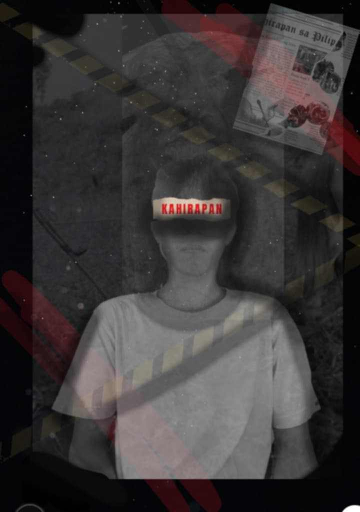

MANLAPUZ at GALICIA
- Paliwanag:
Ang poster na ito ay parang nagpapakita ng tema ng kahirapan sa Pilipinas, na kitang-kita sa salitang "KAHIRAPAN" na nakalagay sa bandang ulo, na maaaring simbolo ng bigat ng problemang ito sa isipan ng tao. Ang black and white na tema ay nagbibigay ng damdamin ng kalungkutan o kawalang-pag-asa, habang ang madilim na kulay ay nagpapakita ng seryosong kalagayan.
Yung mga linya o harang ay parang nagsisimbulo ng limitasyon o kawalan ng laya para makaalpas sa mahirap na sitwasyon. Ang newspaper na nasa gilid ay maaaring nagrerepresenta ng mga balita tungkol sa pang-araw-araw na isyu ng lipunan na nakakaapekto sa mga mahihirap. Ang mga pulang guhit naman ay mukhang nagsisimbulo ng panganib o babala, na maaaring konektado sa mga hamon ng kahirapan tulad ng gutom, kawalan ng trabaho, o karahasan.
Dagdag pa dito, ang imahe ay parang nagsasabi na ang kahirapan ay hindi lamang isang pisikal na kalagayan kundi isang sikolohikal na bigat din na dala-dala ng tao. Ang ekspresyon ng mukha sa artwork, kung ito'y nagtatampok ng tao, ay maaaring nagpapakita ng pagsuko o pagkadismaya. Sa kabilang banda, maaaring may nais ding iparating ang artist na pag-asa sa gitna ng kahirapan, lalo na kung may liwanag o kulay sa ilang bahagi ng artwork.
Ang paggamit ng simpleng mga elemento ay nagpapalakas sa mensahe ng artwork, na hindi na kailangan ng komplikadong representasyon para iparating ang tema. Sa kabuuan, ang artwork ay nagiging paalala ng realidad ng kahirapan at ng pangangailangan para sa pagkilos upang ito'y mabawasan o masolusyunan.
- Repleksyon:
Ang kwento ni Reymark Mariano ay nagbibigay-daan upang pag-isipan natin ang mga realidad ng kahirapan sa Pilipinas at ang epekto nito sa mga bata. Sa murang edad na 10, kinakailangan na niyang magtrabaho bilang magsasaka upang makatulong sa kanyang pamilya. Nakakadurog ng puso ang makita na ang isang bata, na dapat sana’y naglalaro at nag-aaral, ay kailangang magpasan ng ganitong kabigatan. Ipinapakita ng kwento ni Reymark na ang kahirapan ay hindi lamang isyung ekonomiko kundi emosyonal at pisikal na pasanin din.
Ang ganitong sitwasyon ay nagpapakita ng kakulangan ng suporta at oportunidad para sa mga mahihirap, lalo na sa kabataan. Gayunpaman, ang malasakit at kabutihan ng maraming Pilipino ay umangat sa kwentong ito, na nagbigay kay Reymark ng pag-asa. Ang tulong mula sa mga donasyon ay patunay na ang pagkakaisa ng mga tao ay may kakayahang magdala ng pagbabago. Dahil dito, nagkaroon si Reymark ng pagkakataong tumutok sa kanyang edukasyon at mga pangarap sa buhay.
Bilang mga Pilipino, mahalagang tanungin natin ang ating sarili kung paano pa tayo makakatulong upang mabawasan ang ganitong mga sitwasyon. Ang kwento ni Reymark ay nagbibigay inspirasyon hindi lamang para tumulong kundi upang palaganapin ang pag-asa sa kabila ng kahirapan. Sa kabila ng hirap na kanyang dinanas, nanatili siyang matatag, na isang magandang halimbawa ng tibay ng loob at pagsusumikap ng kabataang Pilipino. Ito rin ay isang hamon sa lipunan upang magkaisa sa pagtulong sa mga nangangailangan.